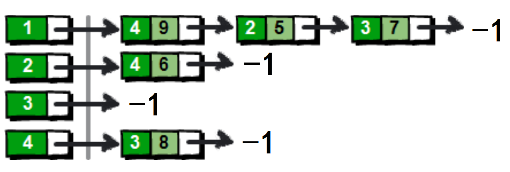
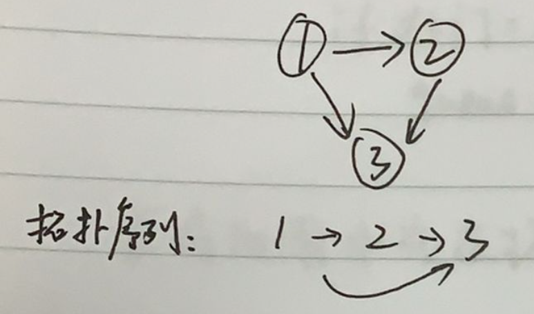

DFS和BFS简介
数据结构
性质
空间
DFS
stack
不具有最短性
O(h)
BFS
queue
最短性
O(2^h)
重要概念
回溯
剪枝
树和图的存储 由于树是特殊的图，所以这里只介绍图的存储
1.邻接矩阵 （用的少） **使用g[a,b]表示 a->b 的一条边 **
2.邻接表 对应每个点，开一个单链表,每个单链表中存储能够达到的点
存储的操作类似于hash表 拉链法

1 {% asset_img 1. png This is an example image % }
实现代码：
存储：
1 2 3 4 5 6 7 8 9 10 11 12 13 14 15 16 17 18 const int N = 100010 ,M = 2 * N;int h[N]; int e[M]; int ne[M]; int idx; int add (int a, int b) int main () memset (h, -1 , sizeof h);
注意：
节点编号一定是存储在e[]中，不会存储在h[]中 。
使用邻接表，一定要将**h[]初始化为-1**
如果有N个节点，e[] ne[]一定要开2N个
树和图的遍历 图的深度优先遍历 1 2 3 4 5 6 7 8 9 10 11 12 13 bool st[N]; void dfs (int u) true ; for (int i = h[u]; i != -1 ; i = ne[i]) int j = e[i]; if (!st[j]) dfs (j);
注意 :
遍历循环条件 i != -1,区别于双链表的ne[i]! = -1
图的宽度优先遍历
应用：求拓扑序列
拓扑序列：针对有向无环图(AOV网)，不唯一
如：
若有向图中存在环， 则不可能有拓扑序列
一个有向无环图（拓扑图），一定存在一个拓扑序列
引入概念：度
入度：有多少条边指向自己；出度：有多少条边出去
求拓扑序列的方式：
所有入度为0的点，都可以作为起点（没有任何一个点在前面）
因此，先把所有入度为0的点入队
循环：
选择一个入度为 0 的顶点，并将它输出
删除图中从顶点连出的所有边
若输出的顶点数小于图中的顶点数，则表示该图存在回路，即无法拓扑排序，
否则，输出的就是拓扑序列 （不唯一）
下面这篇博客写出了详细的求解过程
拓扑排序_Unique-You的博客-CSDN博客_拓扑序列
具体代码见后面例题
例题 图的深搜 846. 树的重心 - AcWing题库
1 2 3 4 5 6 7 8 9 10 11 12 13 14 15 16 17 18 19 20 21 22 23 24 25 26 27 28 29 30 31 32 33 34 35 36 37 38 39 40 41 42 43 44 45 46 47 48 49 50 51 52 53 54 55 56 57 58 59 60 61 62 63 64 #include <iostream> #include <algorithm> #include <cstring> using namespace std;const int N = 1e5 + 10 ; const int M = 2 * N; int h[N]; int e[M]; int ne[M]; int idx; int n; int ans = N;bool st[N]; void add (int a, int b) int dfs (int u) int res = 0 ; true ; int sum = 1 ; for (int i = h[u]; i != -1 ; i = ne[i]) {int j = e[i];if (!st[j]) {int s = dfs (j); max (res, s); max (res, n - sum); min (res, ans); return sum;int main () memset (h, -1 , sizeof h); for (int i = 0 ; i < n - 1 ; i++) {int a, b;add (a, b), add (b, a); dfs (1 ); return 0 ;
图的宽搜 847. 图中点的层次 - AcWing题库
代码：
1 2 3 4 5 6 7 8 9 10 11 12 13 14 15 16 17 18 19 20 21 22 23 24 25 26 27 28 29 30 31 32 33 34 35 36 37 38 39 40 41 42 43 44 45 46 47 48 49 50 51 52 53 54 55 56 57 58 59 60 61 62 63 64 65 #include <cstring> #include <iostream> using namespace std;const int N=100010 ;const int M = 2 * N; int h[N], e[N], idx, ne[N];int d[N]; int q[N]; int n, m; void add (int a, int b) int bfs () int hh=0 ,tt=0 ;0 ]=1 ; memset (d,-1 ,sizeof d);1 ]=0 ; while (hh<=tt)int t=q[hh++];for (int i=h[t];i!=-1 ;i=ne[i])int j=e[i];if (d[j]==-1 )1 ; return d[n];int main () memset (h,-1 ,sizeof h);for (int i=0 ;i<m;i++)int a,b;add (a,b);bfs ()<<endl;return 0 ;
容易踩坑：
使用手写的队列时，一定注意++操作的顺序
在入队时，h[++tt]=x
在出队时，h[hh++]=x
有向图的拓扑排序 848. 有向图的拓扑序列 - AcWing题库
1 2 3 4 5 6 7 8 9 10 11 12 13 14 15 16 17 18 19 20 21 22 23 24 25 26 27 28 29 30 31 32 33 34 35 36 37 38 39 40 41 42 43 44 45 46 47 48 49 50 51 52 53 54 55 56 57 58 59 60 61 62 #include <iostream> #include <cstring> #include <algorithm> using namespace std;const int N=100010 ;int h[N],e[N],ne[N],idx;int n,m;int q[N],d[N];void add (int a,int b) bool topsort () int hh=0 ,tt=-1 ;for (int i=1 ;i<=n;i++)if (!d[i]) while (hh<=tt)int t=q[hh++];for (int i=h[t];i!=-1 ;i=ne[i])int j=e[i];if (d[j]==0 )return tt==n-1 ;int main () memset (h,-1 ,sizeof for (int i=0 ;i<m;i++)int a,b;scanf ("%d%d" ,&a,&b);add (a,b);if (topsort ()) for (int i=0 ;i<n;i++)printf ("%d " ,q[i]);puts ("" );else puts ("-1" );return 0 ;
注意
这里的队列和“图中点的层次” 中的队列看似写法不同，实质相同
本题中 tt从-1开始 每次入队前自增，这是队列的标准写法
“图中点的层次”，由于开始处理时，队列中已经有一个元素，所以tt的初值为0